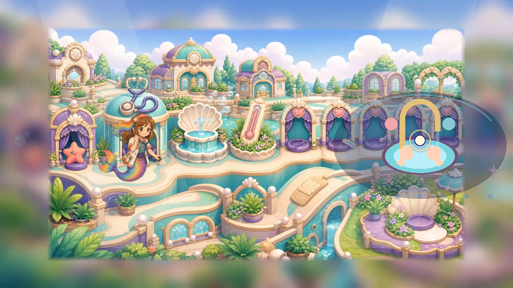
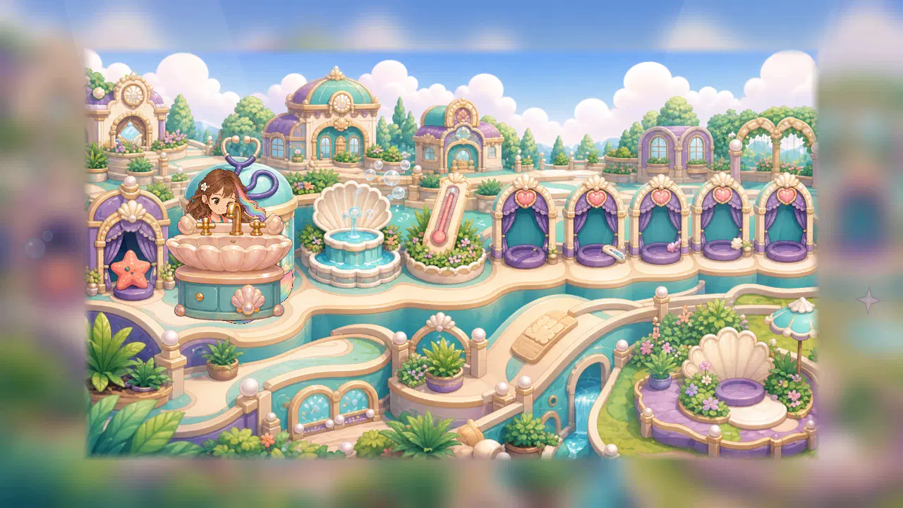
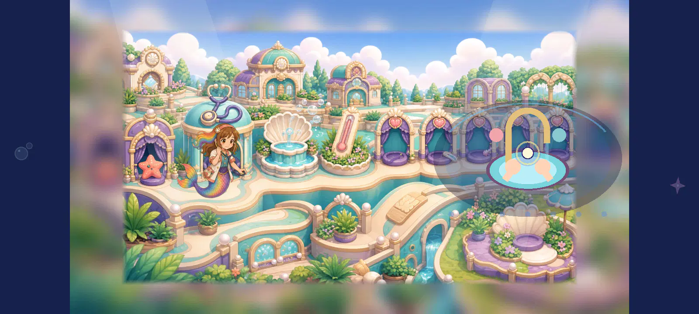
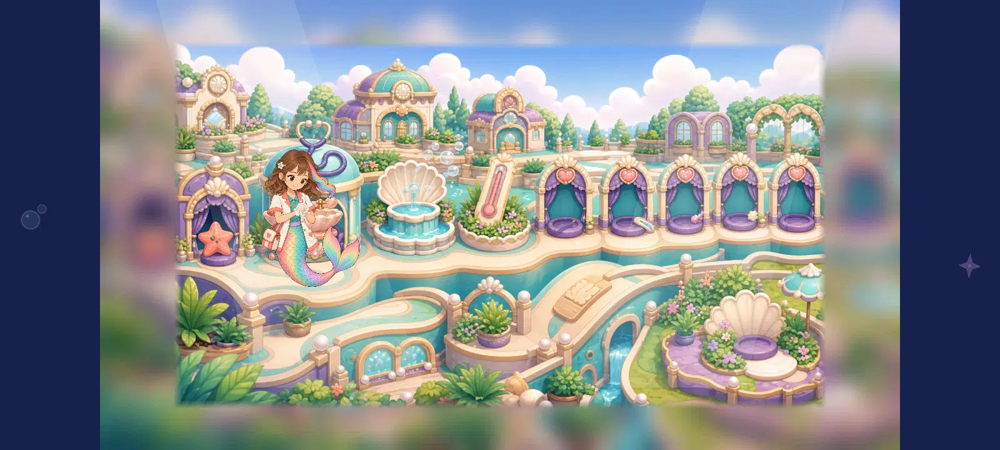
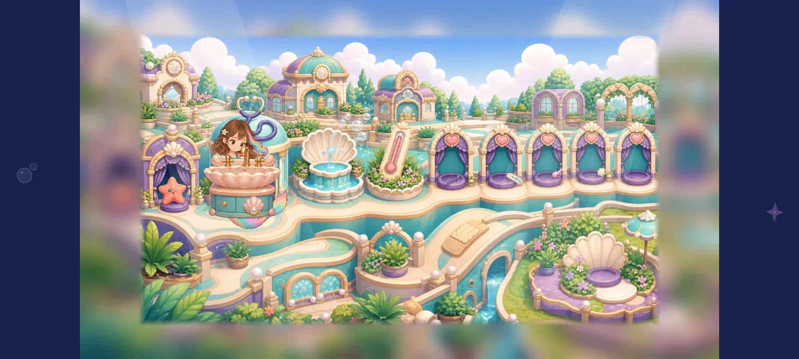
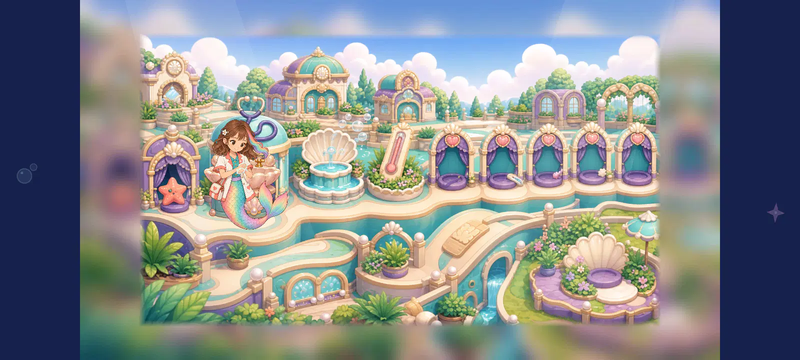
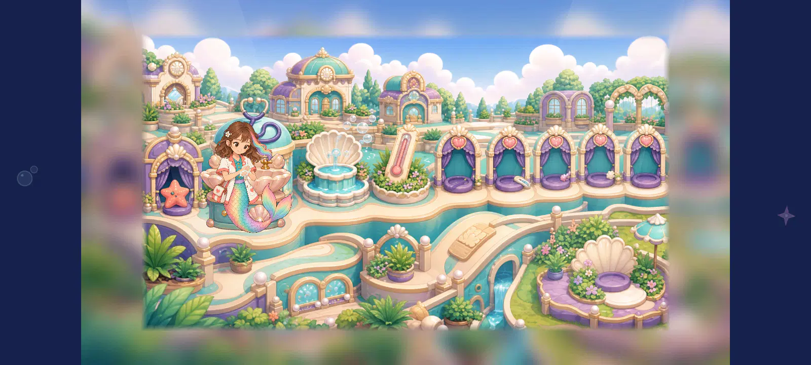

Preserved review checkpointDoctor washing: all 26 first sink placements reviewed
Every native view below was directly inspected. This first placement fails the 4.5/5 contact floor: the sink either obscures the hands or falls behind the whole body. The source images remain unchanged. The next refinement will reuse the existing sink with explicit basin and front-rim draw order.
Every individual written score and geometry · Unchanged-source process evidence · Exact capture hashes
Static test-only composition after real viewport approach. Old actor, task surface and station overlay hidden only in fixture. No shipping binding, progress, complete motion/return, device/child/owner or cinematic acceptance.
DOCTOR-SINK-A01-00
doctor_1280_original.webp · 1280 × 720
Static contact 2.3/5 · composition 2.9/5

The production actor remains at the left stethoscope station while detached schematic hands and a giant flat basin occupy the right. The spatial and style mismatch persists at this width. This static original does not include the entire action.
DOCTOR-SINK-A01-01
doctor_1280_key0_sink150_behind.webp · 1280 × 720
Static contact 3.6/5 · composition 3.8/5
The connected washing hands remain visible, but placing the entire sink behind Roshan lets her torso/tail occlude its rim and cabinet. The depth relationship is ambiguous and no causal water contact or clean payoff is demonstrated. Use a front-rim layer from this same existing sink before commissioning more sink artwork.
DOCTOR-SINK-A01-02
doctor_1280_key0_sink150_front.webp · 1280 × 720
Static contact 2.3/5 · composition 3.0/5
The full painted sink in front covers the rubbing hands and forearms. At this scale the faucet interrupts the chest/face reading and the cabinet hides much of the body; the child cannot inspect the washing contact. A standalone source score does not pass this montage.
DOCTOR-SINK-A01-03
doctor_1280_key0_sink180_behind.webp · 1280 × 720
Static contact 3.8/5 · composition 4.0/5
The connected washing hands remain visible, but placing the entire sink behind Roshan lets her torso/tail occlude its rim and cabinet. The depth relationship is ambiguous and no causal water contact or clean payoff is demonstrated. Use a front-rim layer from this same existing sink before commissioning more sink artwork.
DOCTOR-SINK-A01-04
doctor_1280_key0_sink180_front.webp · 1280 × 720
Static contact 2.3/5 · composition 3.0/5
The full painted sink in front covers the rubbing hands and forearms. At this scale the faucet interrupts the chest/face reading and the cabinet hides much of the body; the child cannot inspect the washing contact. A standalone source score does not pass this montage.
DOCTOR-SINK-A01-05
doctor_1280_key0_sink210_behind.webp · 1280 × 720
Static contact 3.8/5 · composition 4.0/5
The connected washing hands remain visible, but placing the entire sink behind Roshan lets her torso/tail occlude its rim and cabinet. The depth relationship is ambiguous and no causal water contact or clean payoff is demonstrated. Use a front-rim layer from this same existing sink before commissioning more sink artwork.
DOCTOR-SINK-A01-06
doctor_1280_key0_sink210_front.webp · 1280 × 720
Static contact 2.0/5 · composition 2.8/5
The full painted sink in front covers the rubbing hands and forearms. At this scale the faucet interrupts the chest/face reading and the cabinet hides much of the body; the child cannot inspect the washing contact. A standalone source score does not pass this montage.
DOCTOR-SINK-A01-07
doctor_1280_key1_sink150_behind.webp · 1280 × 720
Static contact 3.6/5 · composition 3.8/5
The connected washing hands remain visible, but placing the entire sink behind Roshan lets her torso/tail occlude its rim and cabinet. The depth relationship is ambiguous and no causal water contact or clean payoff is demonstrated. Use a front-rim layer from this same existing sink before commissioning more sink artwork.
DOCTOR-SINK-A01-08
doctor_1280_key1_sink150_front.webp · 1280 × 720
Static contact 2.3/5 · composition 3.0/5
The full painted sink in front covers the rubbing hands and forearms. At this scale the faucet interrupts the chest/face reading and the cabinet hides much of the body; the child cannot inspect the washing contact. A standalone source score does not pass this montage.
DOCTOR-SINK-A01-09
doctor_1280_key1_sink180_behind.webp · 1280 × 720
Static contact 3.8/5 · composition 4.0/5
The connected washing hands remain visible, but placing the entire sink behind Roshan lets her torso/tail occlude its rim and cabinet. The depth relationship is ambiguous and no causal water contact or clean payoff is demonstrated. Use a front-rim layer from this same existing sink before commissioning more sink artwork.
DOCTOR-SINK-A01-10
doctor_1280_key1_sink180_front.webp · 1280 × 720
Static contact 2.3/5 · composition 3.0/5
The full painted sink in front covers the rubbing hands and forearms. At this scale the faucet interrupts the chest/face reading and the cabinet hides much of the body; the child cannot inspect the washing contact. A standalone source score does not pass this montage.
DOCTOR-SINK-A01-11
doctor_1280_key1_sink210_behind.webp · 1280 × 720
Static contact 3.8/5 · composition 4.0/5
The connected washing hands remain visible, but placing the entire sink behind Roshan lets her torso/tail occlude its rim and cabinet. The depth relationship is ambiguous and no causal water contact or clean payoff is demonstrated. Use a front-rim layer from this same existing sink before commissioning more sink artwork.
DOCTOR-SINK-A01-12
doctor_1280_key1_sink210_front.webp · 1280 × 720
Static contact 2.0/5 · composition 2.8/5

The full painted sink in front covers the rubbing hands and forearms. At this scale the faucet interrupts the chest/face reading and the cabinet hides much of the body; the child cannot inspect the washing contact. A standalone source score does not pass this montage.
DOCTOR-SINK-A01-13
doctor_1600_original.webp · 1600 × 720
Static contact 2.3/5 · composition 2.9/5

The production actor remains at the left stethoscope station while detached schematic hands and a giant flat basin occupy the right. The spatial and style mismatch persists at this width. This static original does not include the entire action.
DOCTOR-SINK-A01-14
doctor_1600_key0_sink150_behind.webp · 1600 × 720
Static contact 3.6/5 · composition 3.8/5

The connected washing hands remain visible, but placing the entire sink behind Roshan lets her torso/tail occlude its rim and cabinet. The depth relationship is ambiguous and no causal water contact or clean payoff is demonstrated. Use a front-rim layer from this same existing sink before commissioning more sink artwork.
DOCTOR-SINK-A01-15
doctor_1600_key0_sink150_front.webp · 1600 × 720
Static contact 2.3/5 · composition 3.0/5
The full painted sink in front covers the rubbing hands and forearms. At this scale the faucet interrupts the chest/face reading and the cabinet hides much of the body; the child cannot inspect the washing contact. A standalone source score does not pass this montage.
DOCTOR-SINK-A01-16
doctor_1600_key0_sink180_behind.webp · 1600 × 720
Static contact 3.8/5 · composition 4.0/5
The connected washing hands remain visible, but placing the entire sink behind Roshan lets her torso/tail occlude its rim and cabinet. The depth relationship is ambiguous and no causal water contact or clean payoff is demonstrated. Use a front-rim layer from this same existing sink before commissioning more sink artwork.
DOCTOR-SINK-A01-17
doctor_1600_key0_sink180_front.webp · 1600 × 720
Static contact 2.3/5 · composition 3.0/5

The full painted sink in front covers the rubbing hands and forearms. At this scale the faucet interrupts the chest/face reading and the cabinet hides much of the body; the child cannot inspect the washing contact. A standalone source score does not pass this montage.
DOCTOR-SINK-A01-18
doctor_1600_key0_sink210_behind.webp · 1600 × 720
Static contact 3.8/5 · composition 4.0/5
The connected washing hands remain visible, but placing the entire sink behind Roshan lets her torso/tail occlude its rim and cabinet. The depth relationship is ambiguous and no causal water contact or clean payoff is demonstrated. Use a front-rim layer from this same existing sink before commissioning more sink artwork.
DOCTOR-SINK-A01-19
doctor_1600_key0_sink210_front.webp · 1600 × 720
Static contact 2.0/5 · composition 2.8/5
The full painted sink in front covers the rubbing hands and forearms. At this scale the faucet interrupts the chest/face reading and the cabinet hides much of the body; the child cannot inspect the washing contact. A standalone source score does not pass this montage.
DOCTOR-SINK-A01-20
doctor_1600_key1_sink150_behind.webp · 1600 × 720
Static contact 3.6/5 · composition 3.8/5
The connected washing hands remain visible, but placing the entire sink behind Roshan lets her torso/tail occlude its rim and cabinet. The depth relationship is ambiguous and no causal water contact or clean payoff is demonstrated. Use a front-rim layer from this same existing sink before commissioning more sink artwork.
DOCTOR-SINK-A01-21
doctor_1600_key1_sink150_front.webp · 1600 × 720
Static contact 2.3/5 · composition 3.0/5
The full painted sink in front covers the rubbing hands and forearms. At this scale the faucet interrupts the chest/face reading and the cabinet hides much of the body; the child cannot inspect the washing contact. A standalone source score does not pass this montage.
DOCTOR-SINK-A01-22
doctor_1600_key1_sink180_behind.webp · 1600 × 720
Static contact 3.8/5 · composition 4.0/5

The connected washing hands remain visible, but placing the entire sink behind Roshan lets her torso/tail occlude its rim and cabinet. The depth relationship is ambiguous and no causal water contact or clean payoff is demonstrated. Use a front-rim layer from this same existing sink before commissioning more sink artwork.
DOCTOR-SINK-A01-23
doctor_1600_key1_sink180_front.webp · 1600 × 720
Static contact 2.3/5 · composition 3.0/5
The full painted sink in front covers the rubbing hands and forearms. At this scale the faucet interrupts the chest/face reading and the cabinet hides much of the body; the child cannot inspect the washing contact. A standalone source score does not pass this montage.
DOCTOR-SINK-A01-24
doctor_1600_key1_sink210_behind.webp · 1600 × 720
Static contact 3.8/5 · composition 4.0/5

The connected washing hands remain visible, but placing the entire sink behind Roshan lets her torso/tail occlude its rim and cabinet. The depth relationship is ambiguous and no causal water contact or clean payoff is demonstrated. Use a front-rim layer from this same existing sink before commissioning more sink artwork.
DOCTOR-SINK-A01-25
doctor_1600_key1_sink210_front.webp · 1600 × 720
Static contact 2.0/5 · composition 2.8/5
The full painted sink in front covers the rubbing hands and forearms. At this scale the faucet interrupts the chest/face reading and the cabinet hides much of the body; the child cannot inspect the washing contact. A standalone source score does not pass this montage.